Dialog widgets
This section gives an overview of the available widgets. If the code examples given in this section are not intuitive to you, you might want to take a look into Executing dialogs.
Determining the widget attributes
Note
The widget attributes are documented below. Additionally, information about any widget can be obtained by accessing its __doc__ string.
#
# Query __doc__ attribute of a button widget
#
print (DIALOG.my_button.__doc__)
# output:
# Handle for a widget called 'my_button' of type 'Button' (button::pushbutton)
#
# Attributes:
# name (string) - Name of the widget. The name can be used to access the widget via a dialog handle.
# tooltip (string) - Tooltip of the widget. If empty, no tooltip is displayed.
# enabled (boolean) - Enabled state of the widget. Default is 'enabled', set to false for disabling it.
# value (unspecified/various) - The current value of the widget. Type depends on the widget type and can be 'none' for empty widgets.
# attributes (map) - Map of all accessable widget attributes together with their current values.
# focus (boolean) - Focus state of the widget. Can be used to set an explicit widget focus.
# text (string) - Text of the button
# type (string) - Button type ('push', 'toggle')
# icon (Tom::Parse::Binary) - Icon of the button
# icon_file_name (string) - Source file name of the icon
# icon_size (string) - Icon size mode (icon, full)
# icon_type (string) - Icon type (none, system, file)
# icon_system_type (string) - System icon type (ok, cancel, arrow_up, arrow_down, arrow_left, arrow_right)
# icon_system_size (string) - System icon size (default, large, extra_large)
Dialog window control
Control widget
Note
Each dialog window has a Control widget, which contains the ok / cancel or similar buttons of the dialog.
The control elements of a dialog cannot be configured like other dialog widgets.
Therefore, their name is fixed and they are grouped together inside of the control widget named control.
The control elements consist of the dialogs lower buttons plus a configurable dialog status label.
Handle |
Property |
Example |
|---|---|---|
DIALOG.control |
Control widget |
- |
DIALOG.control.status |
Status icon of the control widget |
DIALOG.control.status = ‘Point 1 missing’ |
DIALOG.control.<button> |
Handle for a button of the control widget |
DIALOG.control.ok.enabled = False |
Control widget elements
Note
The names of the Control widget elements are fixed.
Usually, the names are corresponding with the elements’ semantics. For example, the name of the ok button is ‘ok’. The names can also be obtained from the
__doc__string as shown in the code example below.The control elements are accessed like all other widget attributes.
# Print control widget properties<br>print (DIALOG.control.__doc__)
ControlGroup
Attributes:
status (string) - Status tool tip icon
ok (unspecified/various) - Control widget
cancel (unspecified/various) - Control widget
Status label
Hint
The Status label of the control widget is invisible until a status text is set.
If a status text is set, a small warning icon appears, like in regular applications’ dialogs.
The status label can be configured using its properties like all other widgets.

DIALOG=gom.script.sys.create_user_defined_dialog (file='dialog.gdlg')
# Set status label text
DIALOG.control.status = 'No point selected.'
# Set 'ok' button to disabled<br>DIALOG.control.ok.enabled = False
gom.script.sys.show_user_defined_dialog(dialog = DIALOG)
You can reset the status icon and clear the error message by assigning an empty string (DIALOG.control.status = '').
Wizards
Wizards are dialogs with < Back and Next > buttons at the lower dialog edge.
The script programmer is responsible for adding functionality to this layout.
Wizards are not very versatile, but modifying the displayed texts and images is easily possible.
Warning
It is not possible to exchange widgets from within a dialog after the dialog has been created!
Therefore Wizards only have simple options like exchange of images and texts in those containing elements.
Control widgets
The operational elements in a control widget from a wizard do act like those in regular dialogs und can be accessed via handles as well:
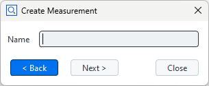
#
# Create dialog with wizard control panel
#
DIALOG=gom.script.sys.create_user_defined_dialog (file='dialog.gdlg')
#
# Handler function to be registered to the dialog
#
def func (widget):
#
# Handle clicks onto the 'prev' button
#
if widget == DIALOG.control.prev:
# Here you would write code to display the content of the previous wizard 'page'
#
# Handle clicks onto the 'next' button
#
print("Prev button was clicked.")
elif widget == DIALOG.control.next:
# Here you would write code to display the content of the next wizard 'page'
#
# Update dialog button enabled state and register handler function
#
print("Next button was clicked.")
DIALOG.handler = func
#
# Execute wizard dialog
#
RESULT=gom.script.sys.show_user_defined_dialog (dialog=DIALOG)
Creating wizard dialogs shows some ways to manage wizard dialogs in greater detail.
Output
Description field (label) widget

- Description field (label) widget
The Description field (label) widget allows to display static text. It is typically used for labelling a section or an individual element of a dialog.
Property |
Type |
Example |
|---|---|---|
tooltip |
str |
DIALOG.label.tooltip = ‘This is just a label!’ |
enabled |
bool |
DIALOG.label.enabled = False |
focus |
bool |
DIALOG.label.focus = True⚠️ Only works if dialog is open |
visible |
bool |
DIALOG.label.visible = False |
text |
str |
DIALOG.label.text = ‘New label:’ |
word_wrap |
bool |
DIALOG.label.word_wrap = True |
Continuous text widget

- Continuous text widget
The Continuous text widget allows to display static text and keywords. A double click onto a text field widget opens the content editor. Some formatting can be applied.
Editor |
Dialog |
|---|---|
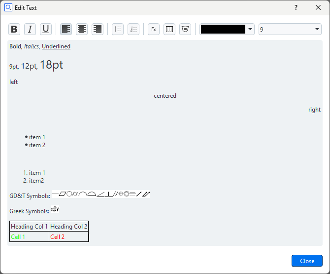 |
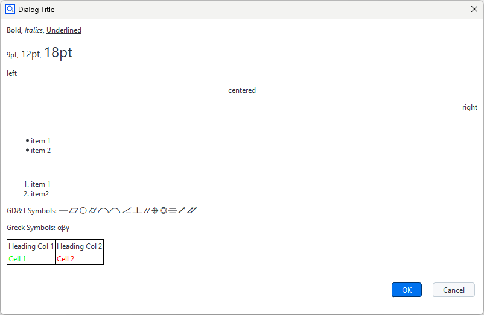 |
Property |
Type |
Example |
|---|---|---|
enabled |
bool |
DIALOG.textWidget.enabled = False |
text |
str |
print(DIALOG.textWidget.text) |
wordwrap |
bool |
DIALOG.textWidget.wordwrap = True |
visible |
bool |
DIALOG.textWidget.visible = False |
default_font_family |
str |
DIALOG.textWidget.default_font_family = ‘Arial Black’ |
default_font_size |
int |
DIALOG.textWidget.default_font_size = 12 |
Displaying keywords in a continuous text widget
A keyword can be inserted into the text with the following procedure:
RMB ► ‘Insert Expression…’

Select ‘Insert Keyword’ button
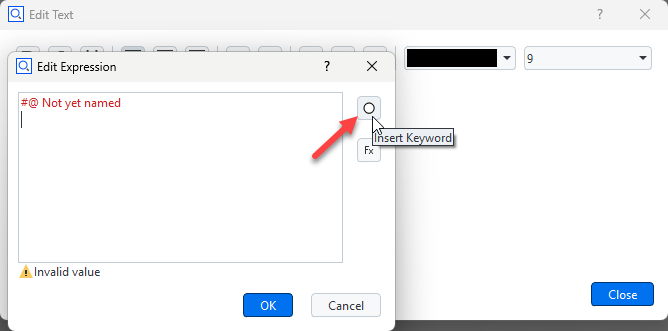
Select the desired keyword from the tree
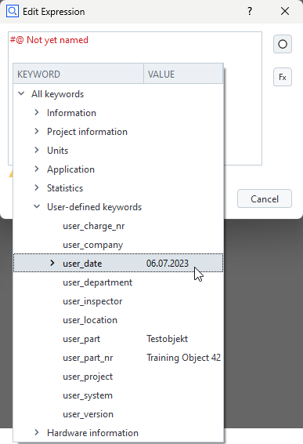
The keyword and its actual value are shown
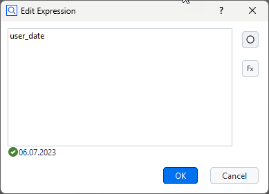
Hint
The comment ‘#@ Not yet named’ should be deleted, otherwise the selected keyword ‘Date’ will not be shown in the editor.
The final rendering of the text widget
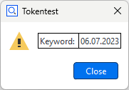
Internal representation of a dialog with text widget
The dialog is stored as a JSON document internally.
gom.script.sys.execute_user_defined_dialog (dialog={
"content": [
[
{
...
},
{
"columns": 1,
"default_font_family": "",
"default_font_size": 0,
"name": "text",
"rows": 1,
"text": {
"id": "",
"text": "\<html\>\<p align=\"center\"\>By clicking 'Close', the dialog will be closed.\</p\>\</html\>",
"translatable": True
},
...
"type": "display::text",
"wordwrap": False
}
]
],
"control": {
"id": "Close"
},
...
})
Image widget

- Image widget
The Image widget allows to display arbitrary images.
Property |
Type |
Example |
|---|---|---|
enabled |
bool |
DIALOG.image.enabled = False |
use_system_image |
bool |
DIALOG.image.use_system_image = True |
system_image |
str |
# Possible values: ‘system_message_information’, ‘system_message_warning’, |
file_name |
str |
read-only! |
keep_original_size |
bool |
read-only! |
keep_aspect |
bool |
read-only! |
data |
(special) |
# This is the actual image data |
width |
int |
print(‘image width ‘ + str(DIALOG.image.width)) |
height |
int |
print(‘image height ‘ + str(DIALOG.image.height)) |
visible |
bool |
DIALOG.image.visible = False |
Note that you can switch from a system image to a user image using the property use_system_image. But this user image must have been selected beforehand in the designer. You cannot read a new image file by setting the filename property. Also, all of the image formatting properties (keep_original_size, keep_aspect, width, height) only work in the designer. From the script you can only read these values. Although you cannot read images using the filename property you can copy images from one dialog to another using the data property. So you are able to prepare (create) a dialog as an image container holding several images. You can then use this image container dialog to copy the image you need to an actually displayed dialog.
Internal representation of a dialog with image widget
The dialog is stored as a JSON document internally. The ‘data’ element contains the image data.
# The 'data' element contains the image data (shortened version here)
RESULT=gom.script.sys.execute_user_defined_dialog (dialog={
"content": [
[
{
"columns": 1,
"data": "AAAAAYlQTkcNChoKAAAADUlIRFIAAAQAAAACQAgCAAAAnPeDgptZSsdt...",
"file_name": "C:/Users/IQMPRINK/Downloads/zeiss-inspect_python.jpg",
"height": 144,
"keep_aspect": True,
"keep_original_size": False,
"name": "image",
"rows": 1,
"system_image": "system_message_information",
"tooltip": {
"id": "",
"text": "",
"translatable": True
},
"type": "image",
"use_system_image": False,
"width": 256
}
]
],
"control": {
"id": "Close"
},
"embedding": "always_toplevel",
"position": "automatic",
"size": {
"height": 233,
"width": 292
},
"sizemode": "automatic",
"style": "",
"title": {
"id": "",
"text": "Dialog with image",
"translatable": True
}
})
Information box widget
Collapsed
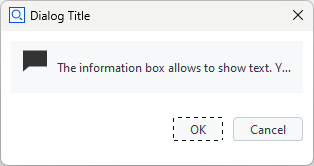
Expanded
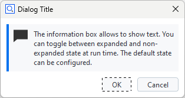
- Information box widget
The Information box widget allows to show text. You can toggle between expanded and collapsed state at run time. The default state can be configured.
Property |
Type |
Example |
|---|---|---|
tooltip |
str |
DIALOG.information.tooltip = ‘About this widget’ |
enabled |
bool |
DIALOG.information.enabled = True |
value |
(unspecified/various) |
n.a. |
focus |
bool |
DIALOG.information.focus = True⚠️ Only works if dialog is open |
visible |
bool |
DIALOG.information.visible = False |
handler |
unspecified/various |
DIALOG.information.handler = information_handler |
text |
str |
DIALOG.information.text = “This is an information box” |
expanded |
bool |
DIALOG.information.expanded = True |
Log widget

- Log widget
The Log widget can display multiple lines of unformatted text, which can be easily saved to a text file by clicking the save button.
Property |
Type |
Example |
|---|---|---|
enabled |
bool |
DIALOG.log.enabled = True |
text |
str |
DIALOG.log.text += ‘Yet another log message.\n |
word_wrap |
bool |
DIALOG.log.word_wrap = True |
show_save |
bool |
DIALOG.log.show_save = False |
save_dialog_title |
str |
DIALOG.log.save_dialog_title = ‘Save operator log’ |
scroll_automatically |
bool |
DIALOG.log.scroll_automatically = True |
visible |
bool |
DIALOG.log.visible = False |
monospace |
bool |
# Use monospace font |
Progress bar widget
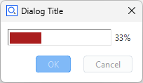
- Progress bar widget
The Progress bar widget can be used in the two modes system and manual.
- Manual mode
In this mode, the user may set the progress bar through its
valuevariable.import gom, time DIALOG=gom.script.sys.create_user_defined_dialog (file='dialog.gdlg') DIALOG.progress.minimum = 0 DIALOG.progress.maximum = 100 gom.script.sys.open_user_defined_dialog( dialog = DIALOG ) DIALOG.progress.value = 0 time.sleep(1) DIALOG.progress.value = 33 time.sleep(1) DIALOG.progress.value = 66 time.sleep(1) DIALOG.progress.value = 100 gom.script.sys.close_user_defined_dialog (dialog=DIALOG)
- Automatic mode
In this mode, the progress bar displays the same progress informations as the progress bar in the lower right corner of the software.
import gom DIALOG=gom.script.sys.create_user_defined_dialog (file='dialog.gdlg') gom.script.sys.open_user_defined_dialog (dialog=DIALOG) gom.script.sys.create_project () gom.script.sys.import_project (file='some project') gom.script.sys.close_user_defined_dialog (dialog=DIALOG)
You can switch between automatic and manual mode from within the script by setting the mode variable as shown below:
# manual mode:
DIALOG.progress.mode = "manual"
# automatic mode:
DIALOG.progress.mode = "system"
- Partially controlled system progress bar
The range of a system progress bar can be divided into parts, sequentially controlled by an executed command.
The progress bar range can be split into multiple parts.
Each part controls an equally sized progress bar interval. If, for example, there are 3 parts, the first part ranges from 0 to 33, the second from 33 to 66 and the third from 66 to 100.
When a command is executed, the command controls just the one active part of the progress bar widget.
# -*- coding: utf-8 -*- import gom # Create a user defined dialog with a progress bar, mode 'system' DIALOG=gom.script.sys.create_user_defined_dialog (file='dialog.gdlg') gom.script.sys.open_user_defined_dialog( dialog = DIALOG ) # Split progress bar into 3 parts DIALOG.progress.parts = 3 # Current part is the first interval (part '0', because we are counting from '0') DIALOG.progress.step = 0 # Execute load command. The command will control the first progress bar range from 0% to 33%. # That means when the command has been finished, the progress bar will display '33%'. gom.script.sys.load_project (file='some project') # Current part is the second interval. The progress bar runs from 33% to 66% DIALOG.progress.step = 1 gom.script.sys.switch_to_report_workspace () gom.script.report.update_report_page ( pages=gom.app.project.reports, switch_alignment=True, switch_stage=False) # Current part is the third interval. The progress bar runs from 66% to 100% DIALOG.progress.step = 2 gom.script.sys.switch_to_inspection_workspace () gom.script.sys.recalculate_all_elements ()
Note
It is possible to switch between automatic and manual mode for each part.
Property |
Type |
Example |
|---|---|---|
tooltip |
str |
DIALOG.progressbar.tooltip = ‘Work in progress!’ |
enabled |
bool |
DIALOG.progressbar.enabled = False |
value |
int |
if DIALOG.progressbar.value < 50: |
focus |
bool |
DIALOG.progressbar.focus = True⚠️ Only works if dialog is open |
minimum |
int |
DIALOG.progressbar.minimum = 20 |
maximum |
int |
DIALOG.progressbar.maximum = 50 |
visible |
bool |
DIALOG.progressbar.visible = False |
parts |
int |
# Set number of progress bar parts |
step |
int |
# Set current step |
text |
str |
# Set text mode (none, percentage, step) |
mode |
str |
# Set mode (system, manual) |
Input
Integer widget

- Integer widget
The Integer widget is used to request an integer value from the user.
integerWidgetis the object name of the integer widget in the example below.
RESULT=gom.script.sys.execute_user_defined_dialog (file='dialog.gdlg')
userInput = RESULT.integerWidget
Property |
Type |
Example |
|---|---|---|
tooltip |
str |
DIALOG.inputInt.tooltip = ‘Enter the number of points!’ |
enabled |
bool |
DIALOG.inputInt.enabled = False |
value |
int |
if DIALOG.inputInt.value < 15: |
focus |
bool |
DIALOG.inputInt.focus = True⚠️ Only works if dialog is open |
visible |
bool |
DIALOG.inputInt.visible = False |
minimum |
double |
DIALOG.inputInt.minimum = 20 |
maximum |
double |
DIALOG.inputInt.maximum = 50 |
Decimal widget
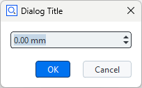
- Decimal widget
The Decimal widget is used to request a floating point value from the user. It is possible to choose the number of digits and a unit. The selectable units are the ones from the user preferences (Edit > Application > Settings > Preferences) in the Default units tab.
decimalWidgetis the object name of the decimal widget in the example below.
RESULT=gom.script.sys.execute_user_defined_dialog (file='dialog.gdlg')
userInput = RESULT.decimalWidget
Property |
Type |
Example |
|---|---|---|
tooltip |
str |
DIALOG.input.tooltip = ‘Enter distance between points!’ |
enabled |
bool |
DIALOG.input.enabled = False |
value |
int |
if DIALOG.input.value < 15: |
focus |
bool |
DIALOG.input.focus = True⚠️ Only works if dialog is open |
visible |
bool |
DIALOG.input.visible = False |
minimum |
double |
DIALOG.input.minimum = 20 |
maximum |
double |
DIALOG.input.maximum = 50 |
precision |
double |
# Set precision to 2 decimals |
unit |
str |
# Set unit ID |
Text entry field

- Text entry field
The Text entry field widget can be used to get string input from the user. A simple use case is given by the next code block.
textEntryWidgetis the object name of the widget in the example below.
DIALOG=gom.script.sys.create_user_defined_dialog (file='dialog.gdlg')
DIALOG.textEntryWidget = "some default text"
RESULT = gom.script.sys.show_user_defined_dialog(dialog = DIALOG)
print( RESULT.textEntryWidget ) # the user input string
Property |
Type |
Example |
|---|---|---|
tooltip |
str |
DIALOG.inputString.tooltip = ‘Enter object description’ |
enabled |
bool |
DIALOG.inputString.enabled = True |
value |
str |
DIALOG.inputString.value = “Warsaw” |
focus |
bool |
DIALOG.inputString.focus = True⚠️ Only works if dialog is open |
visible |
bool |
DIALOG.inputString.visible = False |
read_only |
bool |
if DIALOG.inputString.read_only: |
password |
bool |
# Hide user input by replacing each character by a dot |
Slider widget

- Slider widget
The Slider widget can be used to get a float value from a certain interval from the user.
sliderWidgetis the object name of the slider widget in the example below.
DIALOG=gom.script.sys.create_user_defined_dialog (file='dialog.gdlg')
RESULT = gom.script.sys.show_user_defined_dialog (dialog=DIALOG)
print( RESULT.sliderWidget ) # some text
Property |
Type |
Example |
|---|---|---|
tooltip |
str |
DIALOG.input.tooltip = ‘Drag slider to change rotation’ |
enabled |
bool |
DIALOG.input.enabled = True |
value |
str |
print(‘Angle:’, str(DIALOG.input.value)) |
focus |
bool |
DIALOG.input.focus = True⚠️ Only works if dialog is open |
visible |
bool |
DIALOG.input.visible = False |
minimum |
double |
DIALOG.input.minimum = -90 |
maximum |
double |
DIALOG.input.maximum = 90 |
precision |
double |
# Set precision to 1 decimal |
step |
double |
# Set step size to 15 |
orientation |
str |
print(DIALOG.input.orientation)⚠️ read-only |
Checkbox widget

- Checkbox widget
The Checkbox widget can be used to get boolean input from the user.
checkboxWidgetis the object name of the checkbox widget in the example below.
DIALOG=gom.script.sys.create_user_defined_dialog (file='dialog.gdlg')
RESULT=gom.script.sys.show_user_defined_dialog (dialog=DIALOG)
print (RESULT.checkboxWidget)
Property |
Type |
Example |
|---|---|---|
tooltip |
str |
DIALOG.inputCheckbox.tooltip = ‘Check this option to clear the results after evaluation.’ |
enabled |
bool |
DIALOG.inputCheckbox.enabled = True |
value |
bool |
print(‘Evaluation enabled:’, str(DIALOG.inputCheckbox.value)) |
title |
str |
DIALOG.inputCheckbox.title = ‘Mirror option’ |
visible |
bool |
DIALOG.inputCheckbox.visible = False |
File widget
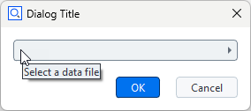
- File widget
By clicking the File widget, a file selection dialog is opened. This allows to select a file from the file system.
Property |
Type |
Example |
|---|---|---|
tooltip |
str |
DIALOG.inputFile.tooltip = ‘Select a file for the protocol’ |
enabled |
bool |
DIALOG.inputFile.enabled = False |
value |
str |
if DIALOG.inputFile.value != ‘’: |
focus |
bool |
DIALOG.inputFile.focus = True⚠️ Only works if dialog is open |
visible |
bool |
DIALOG.inputFile.visible = False |
type |
str |
# Possible values: ‘any’ (any file), ‘new’ (not an existing file), |
title |
str |
DIALOG.inputFile.title = ‘Select the location for the protocol files’ |
default |
str |
DIALOG.inputFile.default = ‘D:/data/default.txt’ |
file |
str |
print(DIALOG.inputFile.file) |
file_types |
list |
# Show only specified file types; each list item must consist of [<filename_extension>, <description>]⚠️ limited must be set to True in order to apply the filter! |
limited |
bool |
# Limit file selection to ‘file_types’ |
Date widget
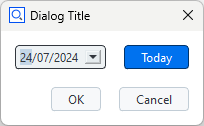
- Date widget
The Date widget requests a date from the user.
dateWidgetis the object name of the date widget in the example below.
DIALOG=gom.script.sys.create_user_defined_dialog (file='dialog.gdlg')
dateObject = DIALOG.dateWidget.value # date object
print( DIALOG.dateWidget.year ) # integer
print( DIALOG.dateWidget.month ) # integer
print( DIALOG.dateWidget.day ) # integer
Property |
Type |
Example |
|---|---|---|
tooltip |
str |
DIALOG.inputDate.tooltip = ‘Enter fabrication date’ |
enabled |
bool |
DIALOG.inputDate.enabled = False |
value |
(special) |
print(‘Selected date:’, str(DIALOG.inputDate.value)) |
focus |
bool |
DIALOG.inputDate.focus = True⚠️ Only works if dialog is open |
visible |
bool |
DIALOG.inputDate.visible = False |
use_current_date |
bool |
DIALOG.inputDate.use_current_date = True💡 if set, use current date to initialize widget. |
year |
int |
DIALOG.inputDate.year = 2014 |
month |
int |
DIALOG.inputDate.month = 12 |
day |
int |
DIALOG.inputDate.day = 24 |
show_today_button |
bool |
DIALOG.inputDate.show_today_button = True |
Color widget
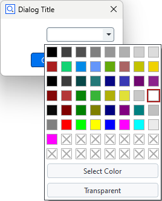
- Color widget
The Color widget allows to select a color.
colorWidgetis the object name of the color widget in the example below.gomColorbehaves in the same way asgom.Color( ... ).
DIALOG=gom.script.sys.create_user_defined_dialog (file='dialog.gdlg')
#
# Event handler function called if anything happens inside of the dialog
#
def dialog_event_handler (widget):
if widget == DIALOG.colorWidget:
gomColor = DIALOG.colorWidget.color
print( gomColor) # output: gom.Color (#ffffffff)
DIALOG.handler = dialog_event_handler
RESULT=gom.script.sys.show_user_defined_dialog (dialog=DIALOG)
print('Selection:', RESULT.colorWidget) # example output (white): 0xffffffff
Property |
Type |
Example |
|---|---|---|
tooltip |
str |
DIALOG.inputColor.tooltip = ‘Select a color for the marks.’ |
enabled |
bool |
DIALOG.inputColor.enabled = True |
value |
(special) |
print(‘Mark color:’, str(DIALOG.inputColor.value)) |
focus |
bool |
DIALOG.inputColor.focus = True⚠️ Only works if dialog is open |
visible |
bool |
DIALOG.inputColor.visible = False |
transparency_allowed |
bool |
DIALOG.inputColor.transparency_allowed = True |
Unit widget

- Unit widget
The Unit widget allows to select a unit.
unitWidgetis the object name of the unit widget in the example below.
DIALOG=gom.script.sys.create_user_defined_dialog (file='dialog.gdlg')
#
# Event handler function called if anything happens inside of the dialog
#
def dialog_event_handler (widget):
if widget == DIALOG.unitWidget:
unit = DIALOG.unitWidget.value
print( unit) # ANGLE
DIALOG.handler = dialog_event_handler
RESULT=gom.script.sys.show_user_defined_dialog (dialog=DIALOG)
Property |
Type |
Example |
|---|---|---|
tooltip |
str |
DIALOG.inputUnit.tooltip = ‘Select a unit.’ |
enabled |
bool |
DIALOG.inputUnit.enabled = True |
value |
(special) |
print(‘Unit ID:’, DIALOG.inputUnit.value) |
focus |
bool |
DIALOG.inputUnit.focus = True⚠️ Only works if dialog is open |
visible |
bool |
DIALOG.inputUnit.visible = False |
Element name widget

- Element name widget
The Element name widget is used to request an element name from the user. It is possible to select the default name (according to naming scheme, e.g. ‘Point 2’ if ‘Point 1’ already exists), or to enter an arbitrary name.
elementnameWidgetis the object name of the element name widget in the example below.
# Let the user define 3 new points (the coordinates are created automatically in this example)
for i in range(3):
DIALOG=gom.script.sys.create_user_defined_dialog (dialog='dialog definition')
#
# Event handler function called if anything happens inside of the dialog
#
def dialog_event_handler (widget):
pass
DIALOG.handler = dialog_event_handler
RESULT=gom.script.sys.show_user_defined_dialog (dialog=DIALOG)
print (RESULT.elementnameWidget)
MCAD_ELEMENT=gom.script.primitive.create_point (
name=RESULT.elementnameWidget,
point={'point': gom.Vec3d (i+10.0, 0.0, 0.0)}
)
Property |
Type |
Example |
|---|---|---|
tooltip |
str |
DIALOG.inputEleName.tooltip = ‘Enter the number of points!’ |
enabled |
bool |
DIALOG.inputEleName.enabled = False |
value |
int |
DIALOG.inputEleName.value = ‘Blob’ |
focus |
bool |
DIALOG.inputEleName.focus = True⚠️ Only works if dialog is open |
visible |
bool |
DIALOG.inputEleName.visible = False |
basename |
str |
DIALOG.inputEleName.basename = ‘Point’ |
mode |
str |
# Mode to get the name suggestion from. (‘manually’, ‘from_element_type’, ‘check_like’) |
read_only |
bool |
# Keep user from changing the default |
Selection
Split button widget
Three split button widgets with modes ‘menu’, ‘instant’ and ‘tool’, respectively.
The top widget has focus. The arrows are just examples for icons.
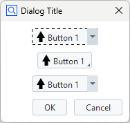
- Split button widget
A split button is a hybrid between a button and an options menu. Each item consist of text and/or an icon. One of the modes
'instant','menu'or'tool'can be configured.'instant'modeYou must open the menu to click a button. The initial button remains fixed.
'menu'modeYou can click the initial button immediately or open the menu to click any available button. The initial button remains fixed.
'tool'modeYou can click the initial button immediately or open the menu to click any available button. The initial button changes to the clicked button.
Property |
Type |
Example |
|---|---|---|
tooltip |
str |
DIALOG.button.tooltip = ‘Start aquisition’ |
enabled |
bool |
DIALOG.button.enabled = False |
value |
int |
if DIALOG.button.value == 0:ℹ️ Index of pressed button |
focus |
bool |
DIALOG.button2.focus = True |
visible |
bool |
DIALOG.button.visible = False |
handler |
(unspecified/various) |
DIALOG.button.handler = my_buttonhandlerℹ️ Optional widget specific event handler |
items |
list |
print(DIALOG.button.items)List of lists defining items [[string, base64]] |
texts |
list |
print(DIALOG.button.items)List of texts for items [string] |
icons |
list |
print(DIALOG.button.items)List of icons for items [base64] |
mode |
str |
DIALOG.button.mode = ‘tool’ℹ️ Button mode (instant, menu, tool) |
Toggle bar widget
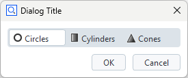
- Toggle bar widget
The toggle bar widget allows to select one of several items. Each item consists of text and/or an icon.
Property |
Type |
Example |
|---|---|---|
tooltip |
str |
DIALOG.toggle.tooltip = ‘Select shape’ |
enabled |
bool |
DIALOG.toggle.enabled = False |
value |
int |
if DIALOG.toggle.value == 0:ℹ️ Index of selected item |
focus |
bool |
DIALOG.toggle2.focus = True |
visible |
bool |
DIALOG.toggle.visible = False |
handler |
(unspecified/various) |
DIALOG.toggle.handler = my_togglehandlerℹ️ Optional widget specific event handler |
items |
list |
# List of lists defining items (text, icon, tooltip) [[string, base64, string]] |
texts |
list |
# List of texts for items [string] |
icons |
list |
# List of icons for items [base64] |
tooltips |
list |
# List of tooltips for items [string] |
style |
str |
# Style of buttons (icon, text, icon_and_text) |
mode |
str |
# Label mode for button group (no_label, label) |
Selection element widget
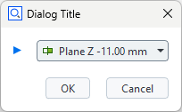
- Selection element widget
The Selection element widget can be used to select the elements from the element explorer. The following element types can be chosen:
Any Point
Point element
Line element
Plane element
Direction
User-defined
elementSelectionWidget is the object name of the element selection widget in the example below.
DIALOG=gom.script.sys.execute_user_defined_dialog (dialog='dialog.gdlg')
selectedElement = DIALOG.elementSelectionWidget
print(selectedElement.value ) # output: gom.app.project.inspection['Equidistant Surface Points 1']
Property |
Type |
Example |
|---|---|---|
tooltip |
str |
DIALOG.selectElement.tooltip = ‘Select a line for rotation’ |
enabled |
bool |
DIALOG.selectElement.enabled = False |
value |
(special) |
if DIALOG.selectElement.value != None:Note: May also be None for user-defined filter and use_not_defined enabled. |
focus |
bool |
DIALOG.selectElement.focus = True⚠️ Only works if dialog is open |
visible |
bool |
DIALOG.selectElement.visible = False |
supplier |
str |
# Read-only property |
filter |
function |
Element filter function for the ‘custom’ supplier. See example below. |
fast_filter |
bool |
Switch expected filter function signature, bulk vs. single element:
False |
use_not_defined |
bool |
Enable to initially show an empty choice for user-defined filter functions, |
The following script shows how to use a custom filter for element selection. The example filter allows the user to select a system plane:
DIALOG4 = gom.script.sys.create_user_defined_dialog(file='dialog.gdlg')
def dialog_event_handler(widget):
pass
# filter system planes
def element_filter(element) -> bool:
try:
if element.type == 'plane':
return True
except Exception as e:
pass
return False
DIALOG4.handler = dialog_event_handler
DIALOG4.input_new.filter = element_filter
# Alternative: use fast filtering
# from typing import Iterable
#
# def fast_element_filter(*elements) -> Iterable[bool]:
# return [element_filter(e) for e in elements]
#
# DIALOG4.input_new.fast_filter = True
# DIALOG4.input_new.filter = fast_element_filter
RESULT = gom.script.sys.show_user_defined_dialog(dialog=DIALOG4)
print('Chosen system plane: ', RESULT.input_new.name)
Please find the complete example here: dialog_custom_elem_select.py
Selection list widget
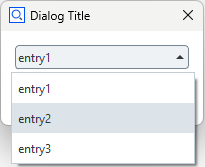
- Selection list widget
The Selection list widget allows to make a selection from a predefined set of options. The selected item can be accessed from a script through its object name (e.g.
selectionListWidget) as follows.
selectedValue = DIALOG.selectionListWidget.value
selectedIndex = DIALOG.selectionListWidget.index
print( selectedValue ) # output: entry2
print( selectedIndex ) # output: 1
Property |
Type |
Example |
|---|---|---|
tooltip |
str |
DIALOG.selectEntry.tooltip = ‘Select one of the operating modes’ |
enabled |
bool |
DIALOG.selectEntry.enabled = False |
value |
str |
DIALOG.selectEntry.value = ‘Debug’ |
focus |
bool |
DIALOG.selectEntry.focus = True⚠️ Only works if dialog is open |
visible |
bool |
DIALOG.select_mode.visible = False |
items |
list of str |
DIALOG.selectEntry.items = [‘Debug’, ‘Info’, ‘Warn’, ‘Error’, ‘Fatal’] |
index |
int |
print(f’List item with index {DIALOG.selectEntry.index} is selected.’) |
Combo box widget
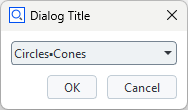
Selection in progress
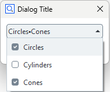
- Combo box widget
The combo box allows to select multiple items from a list. Each item consists of text and data (represented as string).
Property |
Type |
Example |
|---|---|---|
tooltip |
str |
DIALOG.list.tooltip = ‘Select one of the operating modes’ |
enabled |
bool |
DIALOG.list.enabled = False |
value |
str |
DIALOG.list.value = [‘circles’, ‘cones’]ℹ️ Assign a list of data items |
focus |
bool |
DIALOG.list.focus = True⚠️ Only works if dialog is open |
visible |
bool |
DIALOG.list.visible = False |
handler |
(unspecified/various) |
DIALOG.toggle.handler = my_listhandlerℹ️ Optional widget specific event handler |
items |
list |
# List of items (display text, data) |
Buttons
Radio button widget

- Radio button widget
The Radio button widget enables the user to choose an option from a predefined set. Each option has a label and a unique ID, which both can be set in the scripting dialog editor by double clicking the widget. The IDs are ‘ONE’, ‘TWO’ and ‘THREE’ in the example below.
selectedChoice = DIALOG.radiobuttonsWidget.value
print( selectedChoice ) # output: ONE
if selectedChoice == 'ONE':
print("IDs are strings.") # output: IDs are strings.
Property |
Type |
Example |
|---|---|---|
tooltip |
str |
DIALOG.radiobuttons.tooltip = ‘Choose one alternative!’ |
enabled |
bool |
DIALOG.radiobuttons.enabled = False |
value |
str |
DIALOG.radiobuttons.value = ‘Value3’ |
visible |
bool |
DIALOG.radiobuttons.visible = False |
items |
(special list) |
# Possible values is a list of lists of two strings. |
default |
str |
DIALOG.radiobuttons.default = ‘Value1’ |
Layout
Separator line widget
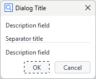
- Separator line widget
The separator line widget provides a horizontal line with an optional title.
Horizontal spacer widget
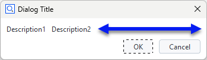
- Horizontal spacer widget
The horizontal spacer widget claims the space specified by
minimum_size(default: 0) andmaximum_size(default: -1, i.e. unlimited). The actual widget is not visible.
Vertical spacer widget
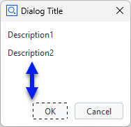
- Vertical spacer widget
The vertical spacer claims the space specified by
minimum_size(default: 0) andmaximum_size(default: -1, i.e. unlimited). The actual widget is not visible.
Tab layout widget
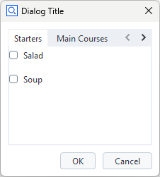 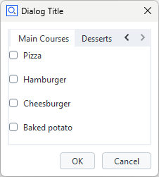
- Tab layout widget
The Tab layout widget provides a configurable number of tabs. Each tab serves as container for any number and types of widgets.
current_tab(integer)Index of current tab
tabs(list)List of tab titles
Separator layout widget
Collapsed
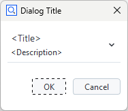
Expanded (contains a single description field widget)
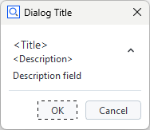
- Separator layout widget
The separator layout widget serves as a container for any number of widgets. Its contents can be collapsed or expanded. It provides titel, desciption and icon as optional features.
title(string)Title text
description(string)Description text
icon(string)System icon or user icon imported from file. Icons are stored as base64-encoded strings.
expanded(boolean)True: Layout is initially expanded
Wizard widget
Wizard style: “List”
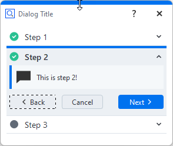
Wizard style: “Stack”
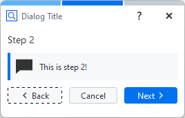
- Wizard widget
The wizard widget allows to create any number of wizard steps, which are completed sequentially. Advancing to the next step, skipping a step or branching to a specific step is only possible if a certain condition, which is defined in the dialog handler, is true. Each wizard step provides a dialog with any type and number of widgets.
current_id(integer)ID of current step
steps(list)List of step titles
Important
If a wizard step can be completed is controlled with the wizard object’s method step_set_complete(step_id, condition).
The condition must be a boolean value, which is typically computed from user input and/or project data.
E.g.: DIALOG.wizard.step_set_complete(DIALOG.wizard.current_id, DIALOG.user_age.value > 18)
import gom
DIALOG=gom.script.sys.create_user_defined_dialog (file='dialog.gdlg')
def dialog_event_handler (widget):
if widget['type'] == 'initialized':
DIALOG.wizard.step_set_complete(DIALOG.wizard.current_id, True)
DIALOG.wizard.handler = dialog_event_handler
gom.script.sys.show_user_defined_dialog (dialog=DIALOG)
See also
The Wizard widget is commonly used in a Workflow Assistant.
Other
Abort button widget

- Abort button widget
The Abort button widget aborts the current action. It is disabled if no action is currently executed. It behaves in the same manner as the abort button in the lower right corner of the ZEISS INSPECT software.

File system browser widget
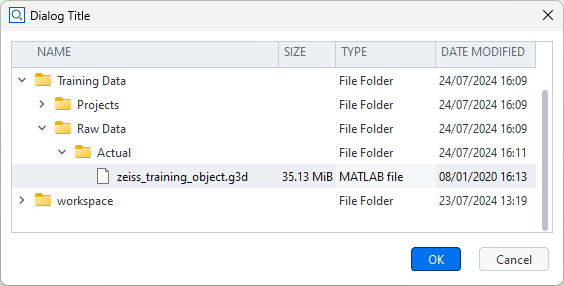
- File system browser widget
The File system browser widget allows to view the file system and to select a file or a set of files, respectively. A filter can be set to show only files with certain filename extensions.
Property |
Type |
Example |
|---|---|---|
tooltip |
str |
DIALOG.filesystemWidget.tooltip = ‘Select CAD file’ |
enabled |
bool |
DIALOG.filesystemWidget.enabled = False |
value |
(unspecified/various) |
The current value of the widget. Type depends on the widget type and can be ‘none’ for empty widgets. |
focus |
bool |
DIALOG.filesystemWidget.focus = True⚠️ Only works if dialog is open |
visible |
bool |
DIALOG.filesystemWidget.visible = False |
root |
str |
DIALOG.filesystemWidget.root = ‘C:/Users’ |
show_date |
bool |
DIALOG.filesystemWidget.show_date = True |
show_size |
bool |
DIALOG.filesystemWidget.show_size = True |
show_type |
bool |
DIALOG.filesystemWidget.show_type = True |
use_multiselection |
bool |
# Enable selection of multiple files |
selected |
list |
print(DIALOG.filesystemWidget.selected) |
filter |
list |
# Apply a filter of filename extensions |
File drag&drop area widget
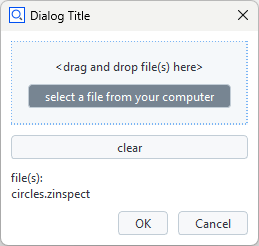
- File drag&drop area
The File drag&drop area allows to select files. The widget shows the base names of the selected files, but stores the filenames with full paths internally. Some of its text items can be configured.
Property |
Type |
Example |
|---|---|---|
tooltip |
str |
DIALOG.filedroparea.tooltip = ‘Select one of the operating modes’ |
enabled |
bool |
DIALOG.filedroparea.enabled = False |
value |
str |
DIALOG.filedroparea.value = [‘circles’, ‘cones’]ℹ️ Assign a list of data items |
focus |
bool |
DIALOG.filedroparea.focus = True⚠️ Only works if dialog is open |
visible |
bool |
DIALOG.filedroparea.visible = False |
handler |
(unspecified/various) |
DIALOG.filedroparea.handler = my_filedrophandlerℹ️ Optional widget specific event handler |
text_area |
str |
DIALOG.filedroparea.text_area = ‘Drag and drop project files here’ℹ️ default: ‘<drag and drop file(s) here>’ |
text_hover |
str |
DIALOG.filedroparea.text_hover = ‘Drop it!’ℹ️ default: ‘<drop file(s)>’ |
text_list |
str |
DIALOG.filedroparea.text_list = ‘Selected project(s)’ℹ️ default: ‘file(s):’ |
max_length |
str |
DIALOG.filedroparea.max_length = 40ℹ️ max. characters, default: -1 (unlimited) |
Tolerances widget

- Tolerances widget
The Tolerances widget is a group of input widgets which allows to configure all parameters related to tolerances.
Property |
Type |
Example |
|---|---|---|
tooltip |
str |
DIALOG.tolerancesWidget.tooltip = ‘Configure tolerances’ |
enabled |
bool |
DIALOG.tolerancesWidget.enabled = False |
value |
(unspecified/various) |
The current value of the widget. Type depends on the widget type and can be ‘none’ for empty widgets. |
focus |
bool |
DIALOG.tolerancesWidget.focus = True⚠️ Only works if dialog is open |
visible |
bool |
DIALOG.tolerancesWidget.visible = False |
expanded |
bool |
# Check if widged is expanded |
mode |
str |
# Tolerance mode (‘no_tolerance’, ‘via_tolerance_table’, ‘from_cad’, ‘manual’, ‘from_element’) |
upper |
double |
DIALOG.tolerancesWidget.upper = 0.3 |
lower |
double |
DIALOG.tolerancesWidget.lower = 0.2 |
use_warn_limit |
bool |
# Use warning levels |
upper_warn |
bool |
DIALOG.tolerancesWidget.upper_warn = 0.5 |
lower_warn |
bool |
DIALOG.tolerancesWidget.lower_warn = 0.4 |
link_limits |
bool |
# Allow setting of upper / lower limits separately |
unit |
str |
# Set unit ID |
Important
The Tolerances widget’s result data type depends on the input:
Symmetric upper/lower tolerance values: A single floating point value is returned.
Asymmetric upper/lower lolerance value or one-sided tolerance: A dictionary is returned.
Examples
Symmetric Tolerances
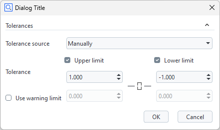
gom.dialog.DialogResult ('tolerances': 1.0)Asymmetric Tolerances
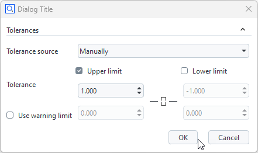
gom.dialog.DialogResult ('tolerances': {'lower': float ('nan'), 'tolerance_type': 'one_sided_under', 'upper': 1.0})One-sided Tolerance
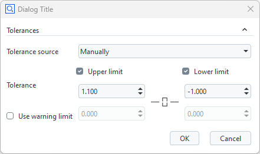
gom.dialog.DialogResult ('tolerances': {'lower': -1.0, 'tolerance_type': 'two_sided_center', 'upper': 1.1})
Widget text assignment and formatting at run time
The Description field (label) widget and the Continuous text widget support HTML / CSS syntax for text formatting and character encoding.
Example: Dialog with a label widget (label)
# Label - font size: 18 pt, style: bold, special character: 'Diameter'
DIALOG.label.text = '<span style="font-size:18pt"><b>Cylinder ⌀</b></span>'
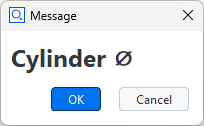
Example: Continuous text widget (cont_text) with formatted text
# Continuous text - font size: 18 pt, font weight: 600, color: red,
DIALOG.text.text = '<span style="font-size:18pt; font-weight:800; color:red;">Attention!</span>'
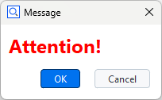
Example: Continuous text widget (cont_text) with a table containing values from variables
var1 = 9.8
var2 = 10
var3 = 0.3
var4 = "pass"
DIALOG.text.text = '<table width="200">'\
'<tr><th>Actual</th><th>Nominal</th><th>Tolerance</th><th>Result</th></tr>'\
f'<tr><td>{var1}</td><td>{var2}</td><td>{var3}</td><td>{var4}</td></tr></table>'
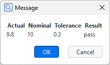
Note
In case a character string is not recognized as HTML code automatically, enclose it in <html> tags:
DIALOG.label.text = '<html>Diameter ⌀</html>'